Créatures cruelles au service de Sauron, que l'on dit issues d'Elfes corrompus par Morgoth au cours des premiers âges. Elles détestent la lumière du soleil et se déplacent en grandes bandes.
Des profondeurs de la Moria aux sommets des Monts Brumeux, découvrez les créatures qui peuplent les films du Seigneur des Anneaux et du Hobbit.
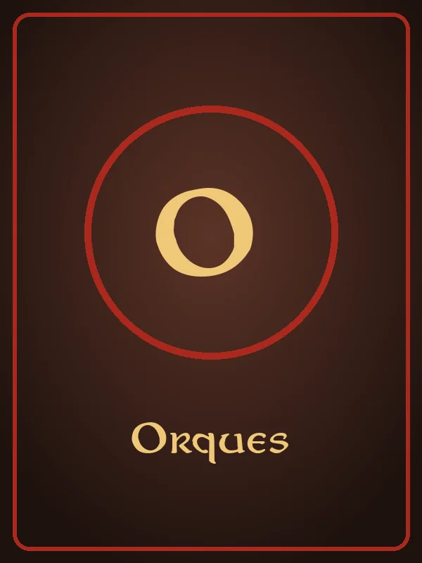
Soldats de Sauron
Créatures cruelles au service de Sauron, que l'on dit issues d'Elfes corrompus par Morgoth au cours des premiers âges. Elles détestent la lumière du soleil et se déplacent en grandes bandes.
Dans tout le Mordor, mais aussi dans la Moria et dans les Monts Brumeux.
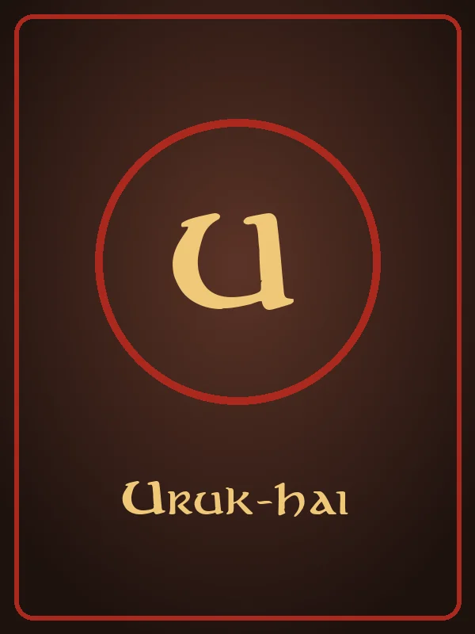
L'armée de Saroumane
Orques plus grands, plus forts et plus disciplinés que les autres, capables de supporter la lumière du soleil. Saroumane en lève une armée pour servir ses propres ambitions.
Isengard, où ils sont créés, puis le Rohan, jusqu'au Gouffre de Helm.
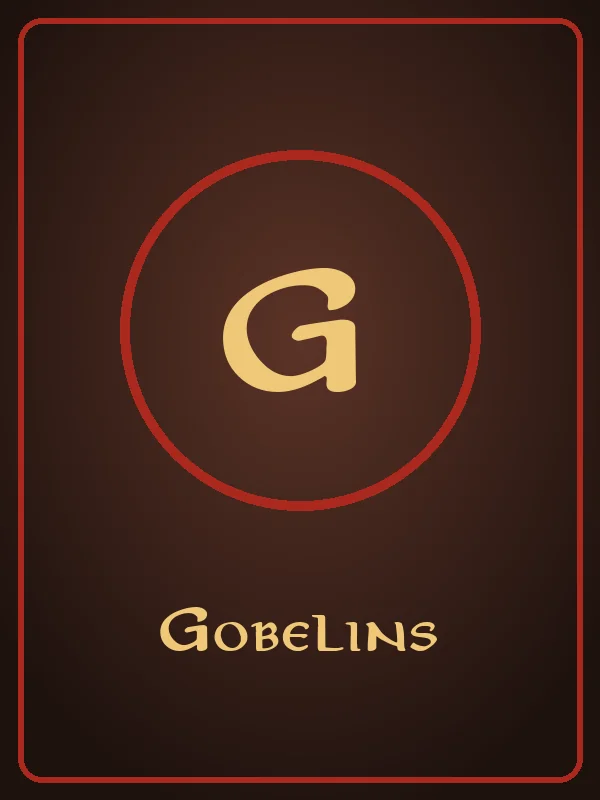
Le peuple des cavernes
Orques des Monts Brumeux, qui vivent dans un labyrinthe de grottes et de tunnels sous les montagnes, sous les ordres du Grand Gobelin.
Sous les Monts Brumeux, près du col emprunté par la compagnie de Thorin.
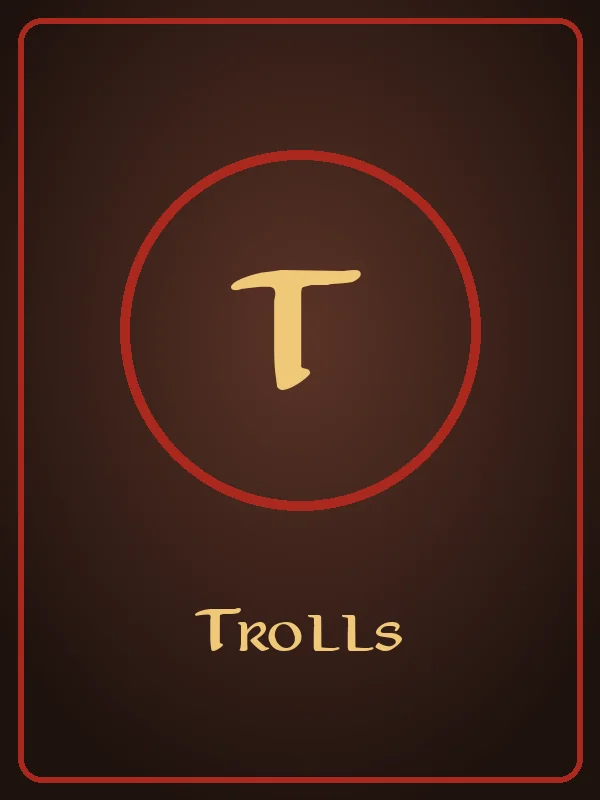
Les géants de pierre
Énormes créatures d'une force colossale, mais peu intelligentes. Les trolls des montagnes se changent en pierre à la lumière du jour.
Le repaire des Trolls, la Moria et les armées du Mordor.
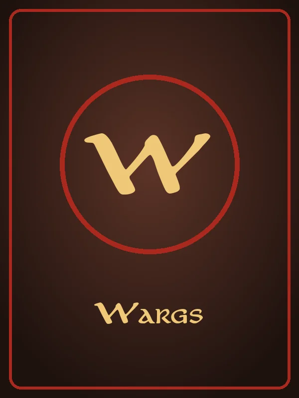
Les loups géants
Loups géants, intelligents et féroces, alliés des orques qui les chevauchent au combat.
Les Monts Brumeux et les plaines du Rohan.
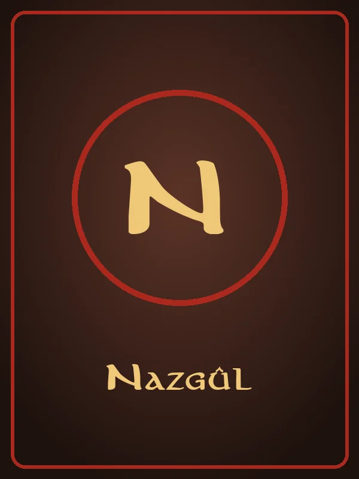
Les Spectres de l'Anneau
Neuf rois des Hommes, corrompus par les anneaux de pouvoir que Sauron leur avait offerts, devenus des spectres. Leur chef est le Roi-Sorcier d'Angmar.
Minas Morgul et le Mordor ; ils parcourent aussi la Comté et Bree à la recherche de l'Anneau.
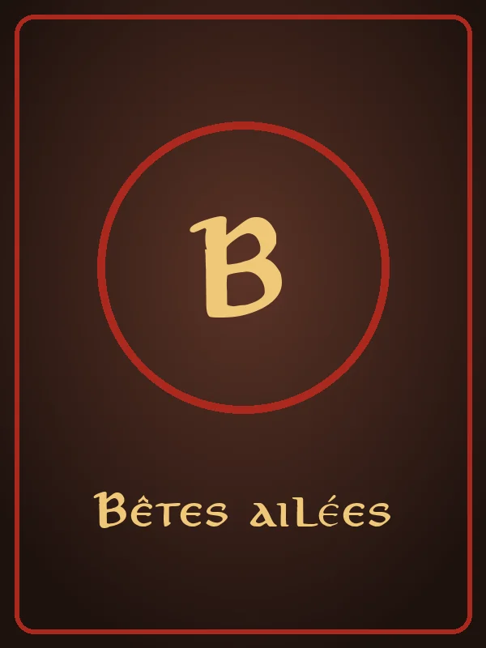
Montures des Nazgûl
Grandes créatures volantes et terrifiantes, que les Nazgûl chevauchent après avoir perdu leurs chevaux.
Le ciel du Mordor et du Gondor, jusqu'au-dessus de Minas Tirith.
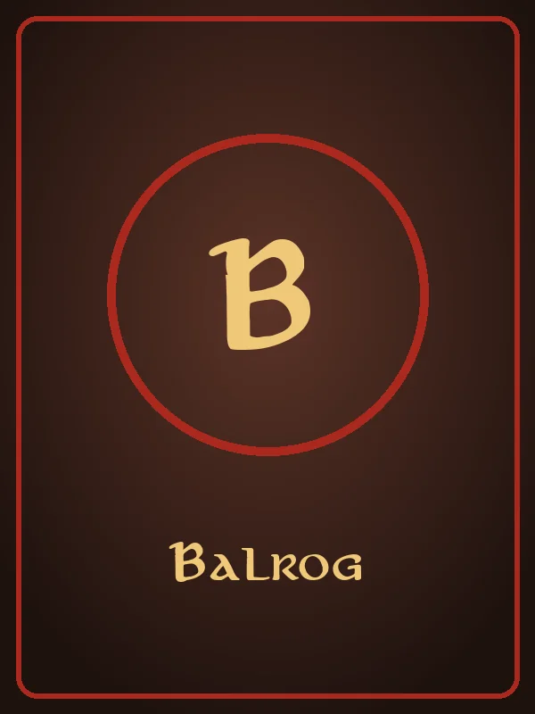
Le Fléau de Durin
Démon de feu et d'ombre venu des premiers âges, un esprit corrompu par Morgoth. Réveillé par les Nains, qui avaient creusé trop profond, il hante la Moria depuis des siècles.
Les profondeurs de la Moria.
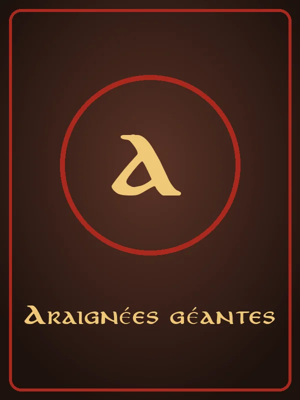
Arachne et sa descendance
Araignées monstrueuses descendant d'Ungoliant. La plus terrible d'entre elles, Arachne, garde le col de Cirith Ungol, à l'entrée du Mordor.
La Forêt Noire et le col de Cirith Ungol, dans le Mordor.
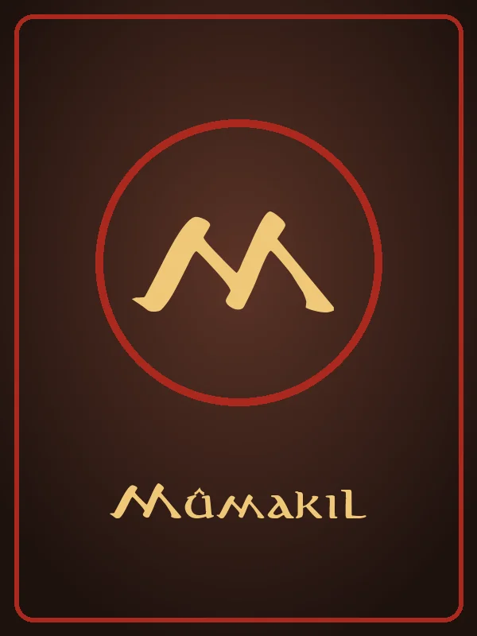
Les oliphants
Gigantesques éléphants du Sud, montés par les Haradrim, qui portent de véritables tours de guerre sur leur dos.
L'Ithilien et les Champs du Pelennor.
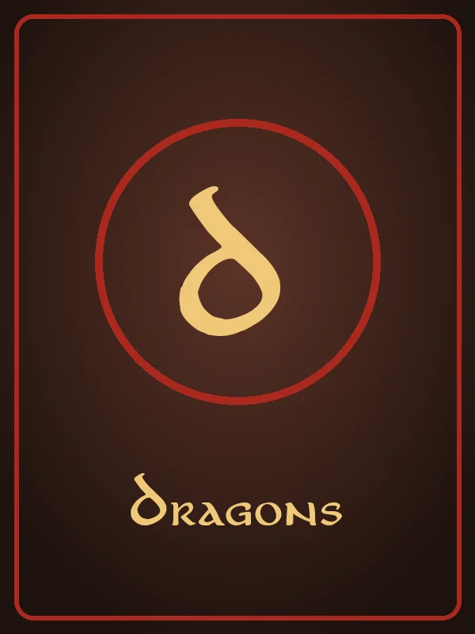
Les fléaux d'or et de feu
Immenses reptiles cracheurs de feu créés par Morgoth, avides d'or et de trésors. À l'époque du Hobbit, Smaug est le dernier des grands dragons.
La Montagne Solitaire, et autrefois les landes du Nord.
Les Bergers des arbres
Gardiens des forêts qui ressemblent à des arbres, parmi les êtres les plus anciens de la Terre du Milieu. Lents à se décider, ils deviennent redoutables une fois en colère.
La forêt de Fangorn.
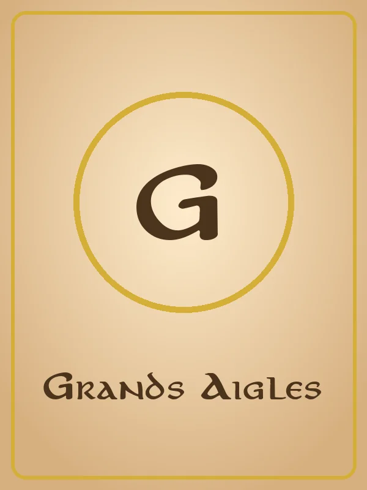
Les messagers du ciel
Oiseaux immenses et intelligents, qui viennent en aide aux peuples libres aux moments les plus désespérés. Leur seigneur s'appelle Gwaihir.
Les sommets des Monts Brumeux.
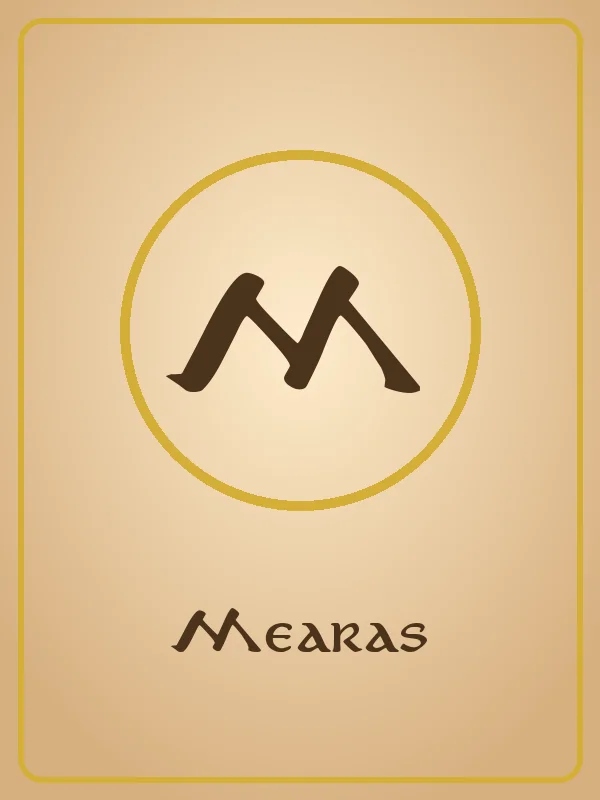
Gripoil et les chevaux des rois
Chevaux exceptionnels du Rohan, rapides et intelligents, qui ne se laissent monter que par les rois. Gripoil, le plus grand d'entre eux, choisit de porter Gandalf.
Les plaines du Rohan, autour d'Edoras.
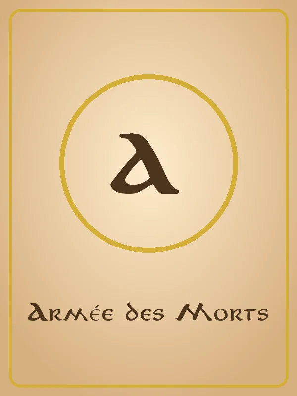
Les Parjures de la Montagne
Esprits des Hommes des Montagnes, maudits par Isildur pour avoir trahi leur serment. Ils hantent les Sentiers des Morts, sous la montagne.
Les Sentiers des Morts, près d'Edoras, puis le Gondor.